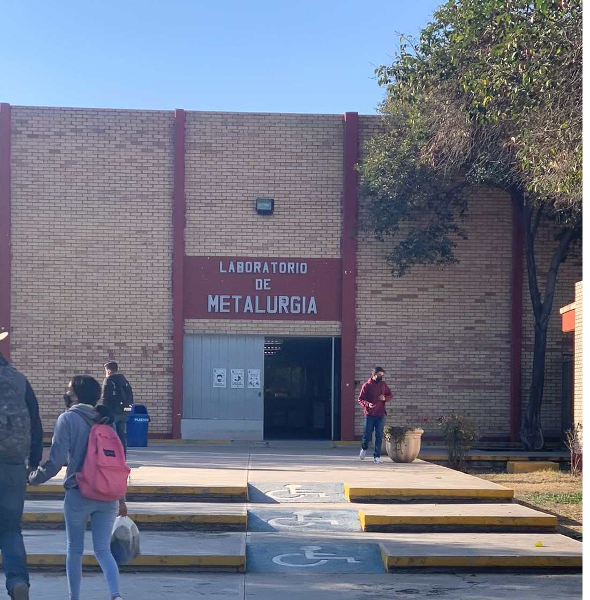

Instituto Tecnológico de Saltillo
Tecnológico Nacional de México
REGRESAR
LABORATORIO DE METALURGIA
Este edificio es un laboratorio para los alumnos de materiales que requieran realizar alguna practica de manera controlada y segura.
|  Entrada principal del laboratorio de Metalurgia |